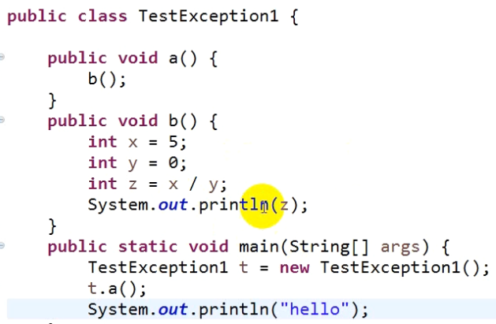
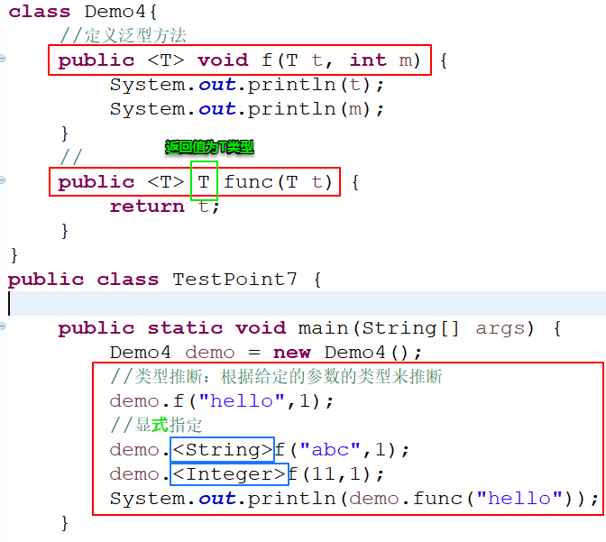
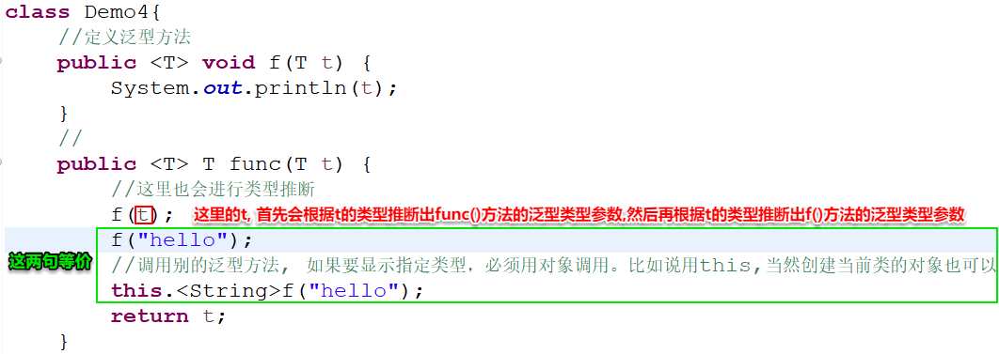

----------------------------------------------------------------------------------------------------------------------------------------------------
首先看一个异常的示例: (这是一个关于除数为0的异常)

运行后, 程序中断, 抛出的异常如下:

为什么会先抛出b方法的异常, 再抛出a方法的异常,再抛出main方法的异常呢?因为上图展示的是一个异常的堆栈轨迹信息。首先,各方法的入栈顺序如下图所示,所以在b()方法入栈执行后碰到异常,没有try-catch,所以中断b()方法, b()出栈, 查看a()调用b()处是否有try-catch,也没有,则中断a(),a()出栈,再查看main方法里是否有try-catch,也没有,则中断main(),因为是jvm调用的main()方法,所以中断main也就退出虚拟机了,那么程序也就中断了,此时就会跳出上图中的提示。

所以异常处理的好处是即使少部分功能出现了异常,依然能保证程序的正常运行。否则程序直接中断了,程序的所有功能都无法运行了,损失会很大。所以异常处理是一种减少损失的操作。
----------------------------------------------------------------------------------------------------------------------------------------------------
异常和错误类的继承结构:

Object : 所有类的父类,当然也是异常和错误类的父类
Throwable : 这个类是异常和错误的父类
Error : 错误类 错误是指代码处理不了的。
Exception: 异常类 。平时遇到的那些都叫异常。如我们代码的bug, 如空指针之类的。异常都是可以处理的。
异常分为两类 :
(1)受检异常（非运行时异常）：编译期 出现的问题。这种异常如果不解决,编译是通不过的,这种异常也会有编译提示
Exception 和 其部分 子类是属于受检异常。
图中的红框部分属于受检异常

(2)运行时异常：运行期出现了问题，程序中断了。(编译能通过)
RuntimeException 类 和 它的子类都是属于运行时异常。(RuntimeException是Exception类的子类)
常见的异常类型

----------------------------------------------------------------------------------------------------------------------------------------------------
java中的异常处理机制:

Java中的异常处理方式:

处理方式：
1.try - catch
语法如下:
"代码段"处放你认为可能会出现的异常
如果抛出的异常和异常类型一致, 则可以对异常进行处理,则程序可以正常执行,

try-catch使用举例:
下面的代码如果不使用try-catch,则如果输入n1=5,n2=0则红框的代码不会执行。但有了try-catch,则红框的代码就即使输入n1=5,n2=0也可以正常执行了。

上图中,如果输入n1=a,则也会引发异常,是InputMismatchException异常,此时和catch块的异常类型不匹配了,则此时依旧会造成程序中断,抛出异常。遇到这种情况可以使用多重catch块。
上图中catch中的代码块并没有写真正的异常处理的逻辑,常用的异常处理的语句如下:
分别将下面这些语句替换掉上图中的System.out.println("异常了");这条语句。
(1)System.out.println(e); (展示异常对象的信息)

(2)System.out.println(e.getMessage()); (展示异常的消息)

(3)e.printStackTrace(); (展示堆栈的轨迹信息)
需要注意的是堆栈轨迹信息打印在了最后,而其他异常信息都是打印在出现异常的位置

try-catch的执行有下列三种情况:
1) 异常类型匹配。
try 执行了,catch也执行了。
2) 没有引发异常。
try执行了，catch没有执行。
3) 异常类型不匹配
try执行了，catch没有执行。
---------------------------------------------------------------------------------------------------------------------------------------------
2、多重catch块(每个catch块一种异常类型)
try{
}catch(){
}catch(){
}
上面的例子用多重catch块改进的代码如下所示:

当觉得异常无法囊括全面的时候, 直接在最后一个catch分支里,写一个如下catch块,因为所有的异常的父类都是Exception, 所以直接用父类的对象来接收所有异常的对象, 那么肯定是可以接收(匹配)成功的,这也是一种多态的运用。

但要注意的是,写catch块处理异常时：
1） 要先写子类的异常处理catch块,再写父类的catch块, 不能父类放在子类catch块之前,因为这样的话父类会把所有异常都处理了,那么子类肯定没机会处理到了它对应的异常了。
2） 先写常见的、经常出现的异常,后写不常见、出现频率低的异常。(让经常出现的先进行异常处理,提高代码执行的效率。)
为什么要写多重catch块,而不直接写一个父类Exception的catch块即可处理所有异常?
多重catch块的好处是可以不同异常做不同的相应处理,而如果是只有Exception的catch块,则异常处理都是单一的, 失去了多样性。
------------------------------------------------------------------------------------------------------------------------------------------------------
3、try-catch-finally
try{
}catch(){ //有finally块的时候, 异常处理如果没有需求的话, 可以没有catch块
}finally{
一定会执行
}
finally块的作用是,只要执行了try块的代码(前提是try代码块会被执行到,比如整个try-catch-finally块都在if分支里,可能try代码块就不会被执行到), 无论是否引发异常,都一定会执行finally代码块里的内容(即使有return语句在try或catch块中出现,也会执行finally块)。但有一种情况特殊是: 在try-catch中执行了System.exit(0);语句,那么finally块里的内容也不会执行,因为已经退出虚拟机了。
JavaGuide中关于finally不会被执行的情况:
在以下 3 种特殊情况下， finally 块不会被执⾏： 1. 在 try 或 finally 块中⽤了 System.exit(int) 退出程序。但是，如果 System.exit(int) 在异常 语句之后， finally 还是会被执⾏ 2. 程序所在的线程死亡。 3. 关闭 CPU。
try-catch需要注意的是,如果异常的类型被catch块捕获到, 在try-catch块后面的语句,仍然可以执行(并不是只有finally块里的东西才会执行)。但如果异常的类型没有与catch块相匹配的, 则不会执行。所以还是和finally有区别的, 并且如果是finally, 有return语句在try或catch块中出现,finally块的代码也会执行, 但是在try-catch-finally块后面的代码则不会执行了。
如下图的System.out.println("异常后语句");能执行到

如果异常类型改为如下, 则下图的System.out.println("异常后语句");不会执行到。

需要注意的是在try-catch-finally块里定义的东西, 在块外是访问不到的。如下三图:


-----------------------------------------------------------------------------------------------------------------------------------------
4.throws : 声明异常。
如果说方法A中在有可能引发异常的情况下没有去try-catch, 可能是我不想处理,也可能是我处理不了,此时可以用throws声明一下该方法A可能会出现问题。然后会把问题抛给调用了方法A的调用者方法B,让方法B来处理出现的异常,。谁调用了这段代码 ,就谁处理可能出现的异常。
如果被调用者希望自己的异常调用者必须处理, 则声明为受检异常,这样的话如果不处理则编译通不过。如果希望调用者可处理可不处理,那就声明为运行时异常即可。
如下图就属于受检异常(Exception和它的部分子类都属于受检异常),此时main方法调用"声明了受检异常的a()方法"时,然后可以发现出现了红线,也就是说不处理该异常的话编译就通不过了。

对于方法A的声明异常, 调用了方法A的方法B有两种处理方式。
方法一:
用try-catch直接把方法A的异常处理了
方法二:
方法B也声明异常,让该异常继续往上层抛, 让调用到方法B的方法C来处理该异常。
对于调用者来说, 当然是用try-catch把异常处理了要更优, 否则像下图这样,main方法处理a()的声明异常时也选择声明异常,将异常继续向上抛的话, 那上一层已经是jvm了,那么程序就只能中断了。

同样的情况下如果声明的是运行时异常,则不会出现编译问题,如下图。这时候可处理可不处理, 如果不处理,尽量去改改源代码, 避免这种异常情况, 否则会直接中断程序的执行。

-------------------------------------------------------------------------------------------------------------------------------
5.throw : 用于程序员自己来对一些情况抛异常
当代码不会出现异常时,可以自己对一些情况抛异常。在编译运行并不出现任何异常的情况下,可以自定义一些规范,在这规范之外的就认为是异常情况,就抛异常。(比如超出人类常识情况的情况我们可以认定为异常,如年龄为大于300,虽然数值上int必然支持,但作为年龄来说, 已经超出人类常识了,这种情况就可以用throw自己抛个异常)
比如下图的345是属于int范围内的,并没有任何违规或异常, 但我们可以手动让某些情况变为异常情况。

需要注意: throw抛出的异常如果是 运行时异常 时, 可以不用throws先声明异常; 但如果throw抛出的异常是受检异常, 则必须先在方法名中用throws声明异常, 此时调用者才必须得捕获或者继续抛出该异常, 如果不用throws声明则编译无法通过。如下图:

上图中的就是受检异常,而下图中的则是运行时异常。

-------------------------------------------------------------------------------------------------------------------------------
注意区别抛出异常(抛异常)和捕获异常(抓异常)的区别:
抛出异常是指将异常抛出,抛给上级调用者, 自身不进行处理。
捕获异常是指自身对异常进行处理, 就不是抛给调用者了。
throws和throw都是属于抛出异常, 区别是throw是语句抛出一个异常,而throws是方法抛出一个异常。(并且如果throw语句抛出的是受检异常, 那么还需要用throws抛一下异常; 如果为运行时异常,则包含该语句的方法可以不用throws再抛)
try-catch是属于捕获异常。
所以遇到异常时, 异常处理的方式就两种:抛出异常或者捕获异常。也就是把异常抛给上级调用者或者自己处理。
-------------------------------------------------------------------------------------------------------------------------------
6.自定义异常类(自定义异常指的是自定义一个异常类)
可以在原有的异常的情况不满足需求时,自定义一种异常类然后抛出。
举个例子:
还是上面的需求,但是我们想通过自定义年龄异常类的方式来处理年龄不在正常值范围内的异常,将年龄异常专门作为一种异常, 而不是用throw抛java自带的类的异常。

也可以重写一下printStackTrace()、toString()、getMessage()等方法, 让抛出的异常是自己定义的信息。

注意:Exception类本身没有任何属于自己独有的方法,它的所有方法都是来自于直接父类Throwable和间接父类Object类。
---------------------------------------------------------------------------------------------------------------------------------------

程序能正常(避免异常)执行不中断的,就不要用异常处理的方式来达到程序不中断执行的目的,比如下图中的正常处理和异常处理虽然执行的结果一样,但是正常处理的方式更佳

尽量不要让一个try块过大,如果过大可以分割成几个小try块
多重catch块可以使不同的异常有不同的处理代码,更加灵活
不要忽略catch块中异常是指: 如果你发现该异常你处理不了,则在catch块中用throw继续抛出异常
尽量改正代码, 让异常越少越好
声明异常(即抛出异常)的方法一定要用文档注释, 以便于别人调用该方法时,知道会有怎么样的异常,然后知道该怎么处理这些异常
以前在讲重写的时候提到过, 子类的异常的范围不能比父类的异常范围更大。
即以下是错误的重写:

以下是正确的重写:

---------------------------------------------------------------------------------------------------------------------------------------
调试(debug) ：

设置断点
F5单步跳入 (代码一行一行执行,如果有调用方法,则会跳转到到调用的方法中(即使是java自带的方法也会进入)去一行一行的执行)
F6单步跳过(代码一行一行执行,但如果有调用别的方法, 不会进入调用的方法中,直接继续执行当前方法)
下图是Run和Debug的图标, Run和Debug的主要区别就是Run会忽略断点直接把程序执行完,而Debug会在程序第一个断点处停止运行,通过F5和F6等继续运行程序。

进入Debug perspective 后
Variable窗口会显示执行到当前行时,当前各种变量的值是多少

鼠标悬停在代码中的某变量上,也会显示代码已经执行到目前状态时(并不是执行到当前变量所在的行)该变量的值是多少

-------------------------------------------------------------------------------------------------------------------------------------
final \ finally \ finalize
----------------------------------------------------------------------------------------------------------------------------
泛型：
即参数化类型。用参数来代替类里的某些类型,使得某些变量的类型可以不断变化,使得泛型类的"不同对象里的同名成员变量"的类型可以不一样
泛型类：
class 类名<类型参数1，类型参数2，…………>{
}
类型参数可以理解为形式类型参数, 类比于方法的形式参数(形参),可以理解为是类的形参,使用起来也和方法的形参类似, 就是以参数替换类中某些类型, 在使用该类创建对象时,再以传过来的类型参数为真正的类型。类型参数必须是引用类型,不能是基本数据类型。
类型参数用法:


上图的赋值语句中, 赋值运算符左边的<Integer>表示 引用 的实际类型参数是Integer类型, 而赋值运算符右边的<Integer>表示对象的类型参数为Integer类型,含义不一样。这里的两个"Integer"就被叫做"实际类型参数", 也叫作"具体的类型参数"(第一行的"T"叫做"形式类型参数")。
用了泛型后, 创建对象时,就需要指定具体的类型参数了, 指定了具体的类型参数后, 就相当于直接将具体类型的值替代所有形式类型参数出现在类里的地方(即用上图中尖括号里的Integer替代类里所有的T)
创建对象时的语句也可以省略构造器后面的尖括号里的内容,如下图。编译器可以根据引用的实际类型参数推断出对象的实际类型参数是什么类型。

多个类型参数时的示例:

类型参数有如下规范：
首先类型参数要用大写字母来表示。并且以下常用字母有指定含义:
T - Type (类型)
E - Element (元素)
K - key (键)
V - Value (值)
参数化类型：
一个类型后边指定一个具体的类型参数(实际类型参数),两者加在一起, 就叫做参数化类型。如下面的红框就叫做参数化类型: (记得,以后碰到这种形式的类型要合在一起看待,它是一个整体,叫做参数化类型)

泛型的好处：
1.使得编译期就能强制进行类型检查(不用等到运行期才进行类型检查,提早发现错误)；
2.声明时某些变量的类型不确定, 可以使用泛型,使得可使用的类型多样化,也可以更方便的复用代码
看一个实例了解如何一步步使用泛型:
题目:

此题首先尝试用Object类型解决:


可以实现题目要求。但如果再在末尾加上下列语句,虽然编译没问题, 但运行时就会出错, 出错的地方是下图中的倒数第二行,原因是类型转换错误,不能由Double转Integer, 因为y变量在自动装箱后,y的底层就是Double类的对象, 所以肯定是转换不成功的。

上图这种错误在编译期没有提示,只有在运行时才会出现, 那可不可以将运行期的错误提示提前到编译期呢?以便于更早的发现错误。让编译期就可以进行类型的语法检查,进行类型的限制和约束。这个时候就需要用到泛型。将上面的Point类定义成一个泛型类, 就可以做到了

如下图, 创建对象时,就需要指定具体的类型参数了, 指定了具体的类型参数后, 就相当于直接将具体类型的值替代所有形式类型参数出现的地方(即用下图尖括号里的Integer替代上图中类里所有的T)。此时再有类型写法存在问题, 就能在编译器发现错误了。如下图:

原生类型：
一个泛型在创建对象时,后边没有指定具体的类型参数,那么这个类型就是原生类型。也就是说创建对象时, 没有指定实际类型参数, 这样写虽然编译器不会报错, 但是会警告。虽然定义成了泛型类, 但为了代码兼容, 编译器还是允许了这么做, 然后编译器(不是执行时哦)会根据接下来输入数据的类型自动将类型参数转换为对应的类型。但定义泛型类的目的就是为了类型的多样性,为了类型检查。这样不够安全, 所以不推荐这样写。
比如下面这样, 虽然编译期不会报错,但是因为输入的数据类型出现了两种不同的类型(Integer和Double), 所以运行期会报错。执行原理是: 在同一个泛型对象里的一个泛型参数毕竟只支持一种类型, 所以如果接下来出现了两种不同的类型,在出现第一种类型时,类型参数已经转换成了这种类型, 所以再出现第二种类型时,则肯定转换不了了,这个时候运行时就会报错了。


---------------------------------------------------------------------------------------------------------------------------------------------
泛型通配符和类型参数:
1、泛型通配符: (和正则表达式的通配符的"."和"*"不一样)
泛型通配符用"?"表示, 主要进行类型匹配, 可以把泛型通配符当做是实际类型参数的一种, 和某种具体的类型等价, 因为他们都是在调用的时候使用。(注意区别泛型通配符和形式类型参数在使用时的区别,分别用在什么地方)
类型界定: 类型界定就是指定泛型的上界或下界。即表示指定形式类型参数的上界或下界, 也表示指定类型通配符的上界或下界。
类型通配符有以下几种类型界定的方式:
"?" : 无界通配符 可以匹配 所有的引用类型 (等价于"? extends Object")
"? extends 上限类" : 可以匹配 上限类 和 上限的子类。(上限类是指继承关系中最高层能到哪个类,而该上限类的所有直接子类和间接子类都可以匹配成功)如:

表示只支持数字类。如Integer、Double等。
"? super 下限类" : 可以匹配 下限类 和 下限类的父类。(下限类是指继承关系中最低层能到哪个类,而该下限类的所有直接父类和间接父类都可以匹配成功)
实例:
如果还是上图那个Point<T>类:

想要在TestPoint类中定义一个f()方法, 让Integer、Double等不同的数字类型都可以传参给f()来打印出x, y的值,这个时候就只能通过泛型通配符来做了。则上图红框调用的TestPoint类的f()方法(注意不是Point类的f()方法)定义如下: (使用泛型统配符来定义)
因为参数化类型不具备可继承性, 所以f()的形参写成Point<Integer>或者Point<Object>等都不合适。

注意上图中的红框不能写成"Point<T> p", 因为T没有在TestPoint类里定义, TestPoint类没有类型参数T(TestPoint类不是泛型类), 方法f()也没有定义类型参数T(f()方法不是泛型方法), 所以出现在f()里的T,对于编译器来说是不知道是什么东西的, 所以必须要在尖括号里指定某种特定的类型或者使用通配符。但是在类型参数有T的类里,方法的参数就能这样写了, 如下图。这样的话,Point11类实例化为对象后,T的实际类型也就确定了。(但这样Point11类的一个对象的f()方法只能接受一种参数化类型(如Point<Integer>), 不像上图的f()那么灵活, 一个方法可以接受多种参数化类型)。

如果上上图的f()函数的参数要求只支持数字,则需要这样使用通配符:

如果f()函数的参数想不支持数字,并且要求是数字类的父类。则可以写

2、类型参数:
类型参数的类型界定:
类型参数的上限(界): (是指在形式类型参数处设置上限,而不是实际类型参数处设置)
类型参数有: 类类型参数,方法类型参数、构造器类型参数
指定 类型参数 上限的形式和 泛型统配符 的形式类似, 为: <类型参数 extends 上限类>。只不过类型参数只能设置上限, 而泛型统配符可以设置上限或设置下限
所以其实类型参数 <T> 就等价于 <T extends Object>
如果一个类型参数有多个上限 则用"&"来连接。如果既有类又有接口并列为多个上限的话,要先写类后写接口
注意区别泛型通配符和形式类型参数(定义上下限)在使用时的区别,分别用在什么地方,有什么联系:
区别: 形式类型参数定义是在定义泛型类, 定义泛型方法或定义泛型构造器时使用, 简单的说就是在定义的时候使用, 而泛型统配符"?"是在调用泛型类、调用泛型方法或调用泛型构造器时使用的, 简单来说就是调用时使用, 可以把泛型通配符当做一种实际类型参数。
二者的共同点是使用时都必须要带上一对"<>", 这样的使用泛型的地方才能定义上下限。
实例:
如果类Point1像下图这样定义,意味着实际类型参数只能指定为Number类或Number类的子类:

如果类Point1像下图这样定义,意味着实际类型参数只能指定为 :该类是Demo1类并且是Ia接口并且是Ib接口(这样的类显然不存在), 或者是Demo1类的子类并且是Ia接口的实现类并且是Ib接口的实现类: (这里的实现类可以是直接实现类也可以是间接实现类), 下图绿框中的Demo2类就可以作为Point1类的实际类型参数。 当然, 如果 Demo1类是Ia接口的实现类并且是Ib接口的实现类, 那么Demo1类也可作为Point类的实际类型参数。

注意: 就像类有子类父类, 有直接子类和间接子类、直接父类和间接父类之分一样, 接口也有子接口父接口, 有直接子接口和间接子接口、直接父接口和间接父接口之分; 同时接口的实现类还有直接实现类和间接实现类!!!也即是说接口的实现类不止可以有一层, 可以有多层继承结构。间接实现类是指直接实现类实现了(implement)接口后,然后直接实现类被继承(extends)给了某个类A,那类A就是间接实现类, 接口里的方法会被间接实现类一直继承下去。
我判断有间接实现类存在的依据如下图: 就是在泛型参数的上限设置为如下形式后, Demo3只继承了Demo2而没有实现接口的情况下, 既然还能当实际类型参数使用(如绿框),说明Demo3同时也属于Ia和Ib两个接口的实现类, 这里并不是直接实现的,而是间接实现的这两个接口, 所以可以称为间接实现类。

从下图则可以看出接口里的方法也会被间接实现类继承到, 会一直继承下来。

类型参数 和 通配符的区别：
1.类型参数 可以表示为一种类型；
通配符不能；(通配符只是进行类型匹配的时候用的而已)
2.类型参数 只能指定 上限；
通配符 可以指定上限，也可以指定 下限；
3.一个类型参数 可以指定多个上限；(为什么要强调一个"?" 因为一个泛型可以同时有多个类型参数,每个类型参数都可以有通配符)
一个通配符只能指定一个上限。
-------------------------------------------------------------------------------------------------------------------------------------------------
泛型构造：
定义形式: 访问修饰符 <类型参数> 构造器名(构造器参数)
泛型构造可以定义在泛型类中, 也可以定义在非泛型类中。无所谓。只需记住, 只要是定义泛型, 无论是泛型类、泛型方法、泛型构造, 那必然会有一对"<>"


上图的绿框和红框的两条语句是等价的。红框语句同时用到了类型推断和参数类型推断,推断出了类的类型参数和由传入的"hello"字符串推断出构造器的类型参数是String,所以类的类型参数和构造器的类型参数都省略了, 而绿框则是全都显示定义的写法。构造器的参数类型推断是根据构造器传的参数"hello"推断出来构造器的参数类型为String的。两个小蓝框处,前面那个是构造器的参数的位置, 后面那个小蓝框是类型参数的位置。如果显示的指定了构造器的类型参数类型, 则对象的类型参数处也不能用类型推断的形式写了,也需要显示定义出来。
构造器的参数类型也可以根据构造器的类型参数的上限来随意更换

普通类定义泛型构造示例:

-------------------------------------------------------------------------------------------------------------------------------------------------
泛型方法：
定义形式: 访问修饰符 <类型参数> 返回值类型 方法名(方法参数)
也是可以定义在泛型类里, 也可以定义在普通类里, 也可定义在接口里。只需记住, 只要是定义泛型, 无论是泛型类、泛型方法、泛型构造, 那必然会有一对"<>"
泛型方法的示例:
泛型方法被调用时也有类型推断。

也可以在泛型方法里调用另一个泛型方法:

--------------------------------------------------------------------------------------------------------------------------------------------
泛型每次创建对象时的类型参数可以是不同的类型,然后导致某些变量在不同的对象中类型不一样, 那既然是这样,会不会导致有多个字节码文件呢?
不会。泛型类只有一个字节码文件,也就是说在堆中,都是同一个对象模板。
因为泛型信息只在编译器存在, 泛型只是提供了编译期的类型检查,到了运行期,生成了字节码文件, 字节码文件中是没有任何泛型信息的, 都会被擦除掉。所以说只要一个泛型类,只有一个字节码文件
--------------------------------------------------------------------------------------------------------------------------------------------
有一点需要注意,参数化类型不具备 可继承性。比如Point<String>并不是Point<Object>的子类, 也就是说Point<Object> 的引用不能引用 Point<String> 类型的对象,他们没有继承关系,不会进行自动类型转换。
虽然生成的字节码文件中尖括号里的信息都会被擦除掉,会使得他们是同一字节码文件。但还没到运行阶段,生成字节码, 编译期间就会认为他们不是同一个类型, 会在编译阶段就报错。所以编译是通不过的, 也就不可能到达运行期了。
下面的例子中: 因为参数化类型不具备继承的关系,所以下面的写法编译出错

如果想让 o=s; 不报错, 则要用泛型通配符来做,比如下面这样:

--------------------------------------------------------------------------------------------------------------------------------------------
擦除的原则：
1.参数化类型。
擦除后 为 原生类型
如 Point<String> 擦除后为 Point
2.类型参数 (泛型类、泛型方法、泛型构造都有类型参数 )
1)无界类型参数。(即不指定上限类的类型参数,)
如方法: public <T> void f(){} 、构造器: public <T> Demo3(){} 以及类: class Point<T> {} 擦除后为 Object , 即擦除后,方法或类或构造里面的T都用Object来代替
2)有一个上限。
擦除后 为 该上限类型。
如 class Point<T extends Demo>{} 擦除后为Demo
3) 有多个上限。
擦除后 为第一个上限类型。
如public <T extends Demo & Ia & Ib> void f(){} 擦除后为Demo
重载:
用参数化类型举例:
只定义一个 用参数化类型作为参数 的方法是可以的:

而定义两个后就不行了, 就是因为擦除后它们是一样的。所以他们两不能重载

由上面的例子引出有了泛型方法之后的重载
方法的重载:
如果方法在定义的时候有类型参数的话, 也可以重载, 但需要注意的是参数列表中,每个泛型方法擦除后的参数列表不能一样。
下面是正确的重载方式: "//"后面是参数列表参数的实际类型(或擦除后的参数类型)

方法的重写:
以前在讲方法重写时说过: 子类要与父类的参数列表要相同, 如果是泛型, 重写时要求: 子类与父类的参数列表完全一样 或者子类的参数列表与父类擦除之后的参数列表相同也可(注意是父类擦除之后,不是子类)
"子类与父类的参数列表完全一样"举例:

"子类的参数列表与父类擦除之后的参数列表相同"举例:
例一:

例二:

下面这种重写的方式就是错误的了: 因为子类的参数列表与父类擦除之后的参数列表不一致

---------------------------------------------------------------------------------------------------------------------------------------
泛型接口：
和泛型类的定义一样。只是使用方式和泛型类略有差别。

注意,因为接口没有构造器,所以接口里不存在泛型构造器, 但是泛型方法也可以定义在接口里:

泛型接口在实现时, 如果不指定类型参数(省略类型参数不写), 则默认是Object类型的,此时如果重写方法里有类的类型参数, 则该参数也变得只能是Object类型的, 如下图: (此时的接口Info是原生类型)

上图中,当然并不是说传入f()的只能是Object类的对象了,参数是Object类型正是表示什么类型的参数都接受,但是你要是想使用你想要的类型的方法,就需要在使用t对象前先强转成该类型,而且要求传过来的对象底层确实就是该类型。可能会略微麻烦些,但是也很灵活,也可以配合instanceof来达到想要的目的。
如果指定了其他类型,则重写方法时类的类型参数就只能是该类型了,比如String :